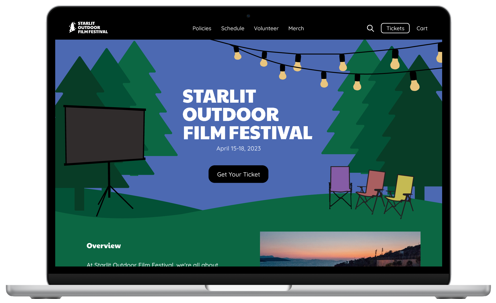
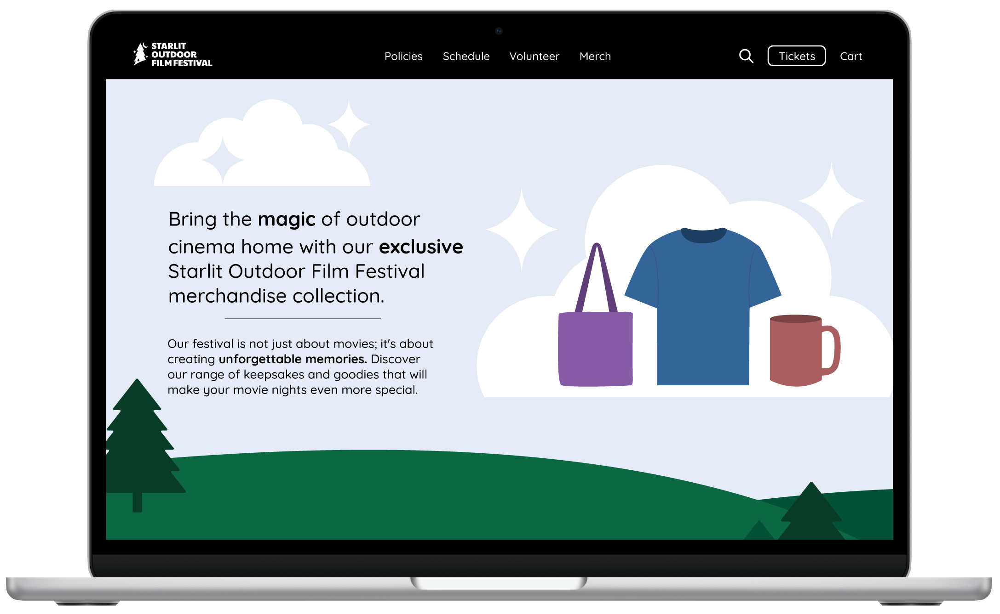
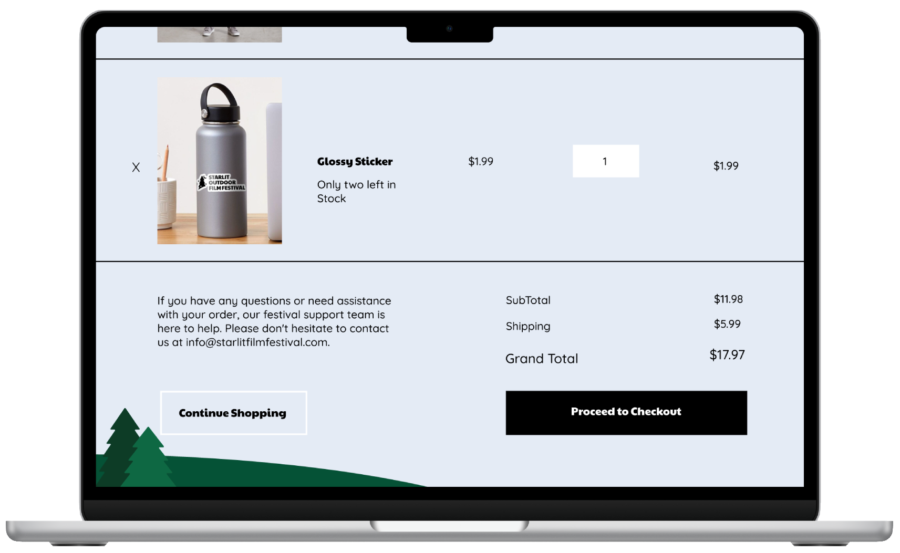
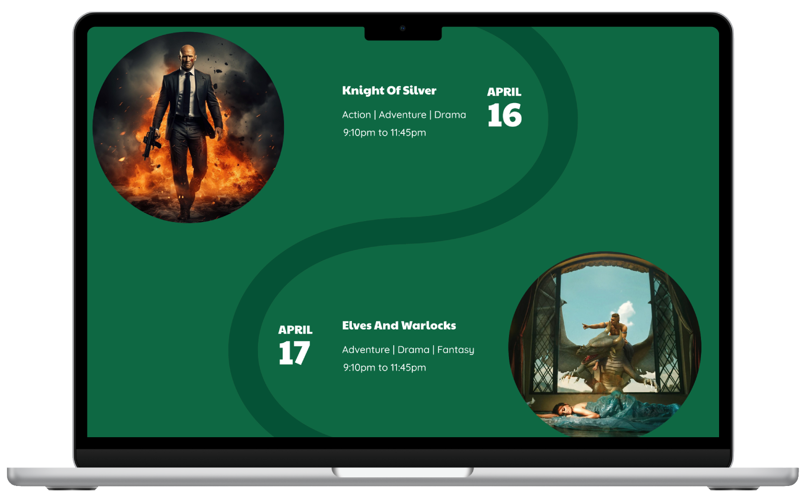
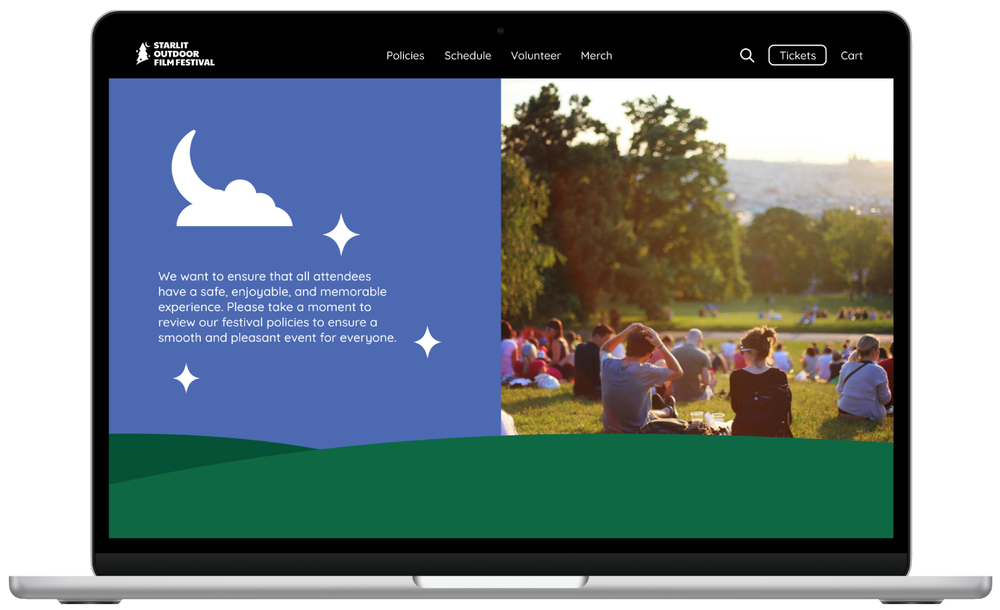

UI/UX Design · Prototype
A website prototype for StarLit, an outdoor film festival hosted in a local park. The design aims to create an inviting experience where visitors can explore upcoming screenings and event details.

01 / DESIGN SHOWCASE




02 / DESIGN PROCESS
Bold text, natural colours, and distinctive imagery create an interesting visual style inspired by the experience of outdoor movies.
Visitors can browse the schedule of upcoming screenings, get event information and purchase tickets to plan their next outdoor movie night.
Clear layouts and well-organized content let visitors find what they need without unnecessary steps.
03 / Explore the Project
Explore the outdoor film festival website prototype.